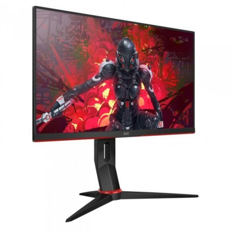
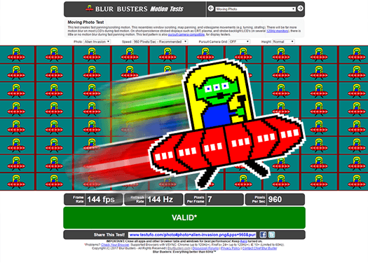

Labākā monitoru mājaslapa Latvijā!
Monitors ViewSonic VX2758-2KP-MHD

ViewSonic VX2758-2KP-MHD ir labs 27", 1440p monitors ar augstu maksimālo spilgtumu un platu skatu lenķi.
Spēlējot spēles būs ļoti laba, bet ne izcila pieredze, dēļ zema "Input Lag", maz attēla izsmērēšanās un monitors atbalsta AMD FreeSync.
Kā lielākā daļa IPS Monitoru tam ir zems kontrasts aptuveni 1070:1, bet atšķirībā no citiem monitoriem - melnā vienveidība ir ļoti laba pa visu paneli.
Tā kā priekš savas specifikācijas un cenas tas ir budžeta monitors tam arī ir daži trūkumi, kā piemēram monitora kāja, kas ir diezgan nestabila un nav erganomiska.
Kā arī dažas no funkcijām, kā "Black strobe lighting" un HDR ir pilnīgi nelietojamas šajā monitorā.
Tas ir monitors ar trīs perfektajām funkcijām: 144Hz, 1440p un IPS. kopumā par 370 Euro (Pašreizējā cena) šī ir ļoti laba izvēle, ja to vari atļauties.
(Vairāk šī monitora bildes var apskatīt galerijā.)
Atšķirības monitoru paneļos

Trīs galvenie monitoru paneļu veidi ir: TN, VA un IPS. Katrs no paneļu veidiem ir savādāks un katram ir savi plusi, un savi mīnus ko izklāstīšu.
TN vislielākais pluss ir tā reakcijas laiks, kas ir vislabākais no visiem trim. Mīnus ir tā sliktie skatu lenķi, ja pat
mazliet nosliecies no monitora centra uzreiz ir redzama krāsu maiņa. Tā krāsu reprodukcija arī ir vissliktākā no trim paneļu veidiem.
TN parasti ir vislētākā no paneļu tehnoloģijām (vidēji).
VA plusi ir tā kontrasts, tas parasti ir vislabākais no monitoru veidiem, tas it īpaši ir redzams parādot kaut ko tumšu,
vai skatoties video kas filmēts naktī. Tam ir labi skatu lenķi un laba krāsu reprodukcija. VA paneļu reakcijas laiks nav pārāk labs it īpaši kad tas rāda kaut ko tumšu, tumšā
krāsā pikseļi pārslēdzās daudz lēnāk.
IPS plusi ir tā mazliet lēnākais bet tomēr pieņemamais reakcijas laiks. vel divi plus ir tā skatu leņķi un tā krāsu
reprodukcija, kas ir vislabākā no visiem trim monitoru veidiem. Vienīgie IPS mīnusi ir tā kontrast kas ir aptuveni tāds
pats kā TN paneļiem un tā cena, IPS ir visdārgākā no paneļu tehnoloģijām (vidēji).
(Vairāk bildes saistītas ar šo tēmu var apskatīt galerijā.)
Monitors ACER VG270UP

Monitors ACER VG270UP ir velviens 1440P, 144Hz, IPS monitors ar 27" ekrānu. Mūsdienās šī ir viena no vispieprasītākajām monitora komplektācijām, tāpēc piedāvājums tiešām ir plašs.
Vismaz daudz plašāks nekā tas bija pāris gadus atpakaļ. It īpaši par tik zemu cenu (Ap 340 Euro).
Monitora erganomika ir diezgan slikta, tā kāja aiņem daudz vietas, bet skatoties uz monitoru ir sajūta ka tas apgāzīsies.
Pat nedaudz uzsitot pa galdu būs redzams, kā monitors kratās. Par laimi ir pieejams Vesa 100 mount, tapēc vari pielikt paša pirktu monitora kāju.
Viss monitors ir veidots no parastas plastmasas un sajūta ir lēta.
Paša monitora performance ir laba, tā reakcijas laiks ir pieņemams: ne tik augsts, kā dargāki IPS monitori un TN monitori, bet nav tik lēns, kā VA monitori.
Šajā monitorā ir pieejams AMD FreeSync (Strādā arī ar GSync), tāpēc spēles spēlējot attēls izskatīsies labi, ja pat kadri sekundē nebūs stabili.
Kopumā monitoru iesaku, bet tomēr, ja ViewSonic VX2758-2KP-MHD ir pieejams un tev ir tie ekstra 40 Euro, pirkt ViewSonic monitoru šķistu kā labāka izvēle.
(Vairāk šī monitora bildes var apskatīt galerijā.)
Monitors AOC C24G2U

{kind=link}
Monitoram AOC C24G2U ir pašlaik labākais cenas un kvalitātes apvienojums priekš IPS, 1080p un 144Hz monitora. No malas tas neizskatās pēc lēta monitora,
kaut vai savā kategorija internet veikalos tas bieži ir vislētākais (Ap 230 Euro).
Tā reakcijas laiks ir fenomenāls salīdzinot ar citiem IPS monitoriem. Tas pat ir ātrāks nekā daži monitori ar tn paneli.
Tas ir gaiš, bet tā melnais kontrasts ir diezgan zems, tāpēc melnā krāsa nebūs tik melnas un dažādīgas. Monitors arī cieš no BLB, kad
it īpaši naktī uz ekrāna ir redzami balti plankumi.
Tomēr kopumā, ja tev nevajag lielāku ekrānu ar lielāku rezolūciju, vai tavs monitors nav pietiekami jaudīgs priekš lielākas rezolūcijas šis būs monitors tev.
Kustības izplūšana dažādos monitoru tipos

{kind=link}
Kustības izplūšana daudzos monitoros ir liela problēm, bet citos tā ir gandrīz neeksistējoša. To visu galveno kārt nosaka paneļa tips: IPS, VA un TN,
bet tajā ir arī citi faktori, kā rezolūcija, funkcijas kas to ietekmē un protams monitora ražotājs, daži ražotāji spēj labāk noregulēt monitorus.
Monitoru attēla izplūšana kustībā ir vistuvāk saistīta ar paneļa veidu un to cik ātri pikselis var no iepriekšējās krāsas nomainīt uz nākamo.
Secīgi no vis lēnākās lidz ātrākajai paneļu tehnoloģijai saraksts ir: VA, IPS un visātrākais TN. Monitora ātrums nevienmēr sekos šai secībai, bet
tas aptuveni ir pareizs. Secība var mainīties dažādu iemeslu dēļ. Piemēram, jo lielāka monitora rezolūcija, jo tā pikseļi vidēji lēnāki. Velviens
faktors kas kontrolē vai kustība smērējas uz monitora ir tā ražotājs, jo daži ražotāji to var pilnībā ignorēt, jo viņu monitori nav domāti video spēlēm, kur tas būs viegli saskatāms.
Pārbaudīt cik labs ir tavs monitors vari Blur Busters dažādajos testos.